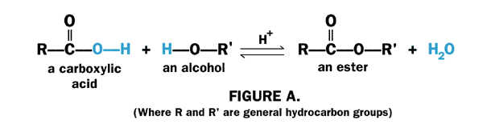
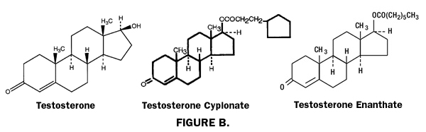

DISCLAIMER
The information contained herein is to be used for educational purposes only.
The author is not a medical professional, and this information should not be
considered medical advice. This information should NOT be used to replace
consultation with or treatment by a trained medical professional. The listing
of a medication herein does not imply endorsement by the author.
Overview
"Normal" testosterone levels
A note of caution about greatly increasing your T dosage
Testosterone esters: what they are and how they work
Injectable T esters commonly used by trans men for testosterone therapy:
Testosterone enanthate
Testosterone cypionate
SustanonOther injectable forms of testosterone:
Testosterone propionate
Testosterone phenylpropionate
Omnadren
Aqueous testosterone suspension
Testosterone patches
Testosterone gels, creams, and other topical applications
Sublingual/buccal testosterone
Subcutaneous testosterone pellet
Overview
In FTM testosterone therapy, testosterone (often called "T" for
short) can be administered into the body in a number of ways. The most common
method is injection (either subcutaneous or intermuscular) with a syringe. Other delivery methods include transdermal
application through gel, cream, or patch applied to the skin; orally by swallowing
tablets (this method is very uncommon as it has been shown to have negative effects
on the liver); sublingually/buccally by dissolving a tablet under the tongue
or against the gums; or by a pellet inserted under the skin. The T-delivery
method used will depend on the type of medication available in the country of
treatment, the health risks/benefits for the patient, personal preference, and cost.
Testosterone is not stored by the body for future use, so in order to maintain healthy levels, it must be administered in timed intervals and in appropriate dosages. Injectable and subcutaneous T pellets remain active in the body the longest. Injectable T is typically administered between once a week to once every three weeks, and subcutaneous T pellets are replaced every 3-4 months. Transdermal T (patch, gel, or cream) is typically applied to the skin in smaller daily doses; oral and sublingual/buccal T are also typically taken daily.
"Normal" testosterone Levels
An individual's testosterone levels are usually confirmed through a blood
test called a "serum total testosterone test." Testosterone exists
in your bloodstream in two forms-- "bound" testosterone and "free"
testosterone. The majority of bound testosterone in the body is chemically bound
to a protein called "sex hormone binding globulin" (SHBG). The remaining
bound testosterone in the system is mostly bound to albumin, another protein.
Free testosterone is not chemically attached to any proteins and is considered the "active" form of testosterone, as it is readily available
to bind to androgen receptor sites on cells.
A serum total testosterone test measures the total of bound and free T in the system. What is considered a normal test level of combined bound and free testosterone in male bodies can range anywhere from 300-1100 ng/dl (nanograms per deciliter). Levels will vary with age and individual factors.
It is useful to also separately measure the level of free testosterone in the system, as this may be more indicative of how hormone therapy is progressing. Levels of free testosterone can range between 0.3%-5% of the total testosterone count, with about 2% considered an optimal level. Ask your doctor to check for both total and free levels of testosterone in your system.
Remember that because everyone's bodies have differing sensitivities to androgens, T levels themselves will not necessarily indicate results in terms of masculinization. The levels are merely a guideline by which you and your doctor can begin to measure progress. Your results and your dosing should be guided by your overall health (especially the health of your heart and liver), your progress in masculinization, and how your body and moods react to different dosages. Testosterone therapy is not a one-size-fits-all approach-- be sure to monitor your health and feelings closely, and remember that even a small adjustment in dosage (either increase or decrease) can make a big difference.
A note of caution about greatly increasing your T
dosage
During the first months of T therapy, many trans men feel impatient waiting for changes
to happen. Some may consider doubling or tripling their dose, thinking that
the more they put in, the faster the changes will come. However, as was mentioned
in the "FTM Testosterone Therapy Basics"
section, dramatically increasing your dose might have the effect of slowing
your changes. This is because excess testosterone in your body can be converted
into estrogen by an enzyme called "aromatase." This conversion is
part of the body's natural feedback system-- if there is an abundance of testosterone
in the body, it is converted ("aromatized") to estrogen in order to
maintain a "normal" hormonal balance. Therefore, taking very large
doses of testosterone might not be a great idea. Be patient; if you are not
seeing results in a reasonable period of time, and/or your T levels are low,
discuss modifying your dosage with your doctor.
To learn more about the side-effects and health issues around testosterone therapy, please see the "FTM Testosterone Therapy and General Health" section.
Testosterone esters: what they are and how they work
Much of the testosterone that is prescribed for the purposes of hormone therapy
is in the form of testosterone "esters." An ester is simply a name for a chemical
compound that is formed from reaction between a carboxylic acid and an alcohol.
A simple chemical diagram of this reaction is shown below in Figure A. Figure
B shows the chemical structure of free testosterone (chemical formula C19H28O2) as well as two different
esters of testosterone (testosterone cypionate and testosterone enanthate).


There are a number of different esters of testosterone, including the commonly prescribed injectables of testosterone enanthate and testosterone cypionate, as well others such as acetate, propionate, phenylpropionate, isocaproate, caproate, decanoate, and undecanoate. Each of these different esters is a molecular chain composed of carbon, hydrogen, and oxygen atoms. The main difference between the different esters is how many carbon and hydrogen atoms make up the chain. For example, the propionate ester is composed of 3 carbons, 6 hydrogens, and 2 oxygens, whereas the cypionate ester is composed of 8 carbons, 14 hydrogens, and 2 oxygens.
Esterification of testosterone is done in order to improve the solubility of testosterone in oil, which in turn slows the release of the testosterone from the site where it enters the body.
Testosterone, in its free, non-esterified form, has poor solubility in either oil or water-- though it can be suspended in water. Non-esterified testosterone is available in an aqueous injectable form with the drug name "Aquaviron." However, this form of testosterone stays active in the body for a very short period of time (only a matter of hours). Because of this, it must be injected on a daily basis in order to maintain a continuous level of testosterone in the blood. Therefore it is rarely used for testosterone replacement therapy as an injectable.
Once you have added an ester group to testosterone, it becomes even less soluble in water and more soluble in oil. Additionally, as a general rule, the more carbon atoms there are in an ester, the more soluble the ester is in oil. For example, testosterone propionate (with 3 carbon atoms in the ester group) is less soluble in oil than testosterone cypionate (with 8 carbon atoms in the ester group). Remember, this is general, simplified rule; the solubility of a molecule depends on structural factors that are beyond the scope of this section.
So generally, the more carbons the ester group has, the more soluble in oil it becomes, and the less soluble in water. The term for this ratio between oil and water solubility is called the "partition coefficient"-- the higher the solubility in oil, the higher the partition coefficient.
The partition coefficient of the ester in question is important because it effects how long the drug itself stays in the system. If the testosterone transfers too quickly from the oil to the blood, the result is a sudden spike in testosterone which then rapidly drops once the dose has been used up. In the example of free testosterone injected into the body from a water suspension (as in Aquiviron, mentioned above), the testosterone is essentially immediately available to the bloodstream due to its low partition coefficient, and thus there is an immediate spike of testosterone which is used up quickly in the body.
Testosterone cypionate, on the other hand, has a high partition coefficient. When injected into the body, the drug remains in its esterified form in a deposit in the muscle tissue or fat tissue, depending on the type of injection. From there, it will slowly enter the circulation as it is picked up in small quantities by the blood. Once the esterified testosterone is brought into the blood stream, "esterase enzymes" cleave off the ester chain in a process known as "hydrolization," thus leaving the testosterone in its free form to perform its various actions and effects.
When people speak of whether a particular testosterone ester is "fast acting" or "slow acting," they are usually referring to the partition coefficient/solubility in oil. As described above, esters with more carbon atoms will generally be more soluble in oil-- they are often referred to as "slow-acting" esters (they stay active in the system longer). Esters that are less soluble in oil are often referred to as "fast-acting" forms of testosterone, referring to the fact that they are more quickly available and used up in the blood stream.
For trans men who are using injectable testosterone, slow-acting esters tend to be preferred, as fewer injections are needed over time to keep the blood levels of T reasonably constant. Testosterone enanthate (7 carbons) and testosterone cypionate (8 carbons) both take about 8-10 days to be fully released in the system, and so they are typically injected once every 7-14 days. Testosterone propionate (3 carbons) takes about 3-4 days to be fully released in the system, and must be injected in smaller doses at least weekly if not twice weekly. For this reason it is not often prescribed for men in transition.
Injectable testosterone
The dosage amount and timing for injectable testosterone will depend largely
upon which ester is being used, as well as the individual's own response to
the hormone. In general, dosages will vary between 50 mg and 300 mg per injection,
depending on the ester and the dosing regimen. An average injectable dose is
about 200-250 mg every two weeks, though many trans men inject 100 mg every week or every 10 days,
or other variations depending on their own bodies' needs and sensitivities.
Again, the exact dosage required will vary from person to person, and health
and well-being should be carefully monitored while determining an individual's
ideal dose.
Some doctors recommend decreasing the dosage of injectables to 100-150 mg every two weeks for those trans men whose ovaries are inactive, or who have had their ovaries removed. Again, this will vary from person to person.
There are a number of different types of injectable testosterone; those available may differ depending on the country in which you reside. The drug names for the same ester of testosterone may also differ depending on the company who produces it. This is not an exhaustive list, though it does cover the main injectable forms of T which are used by trans men for testosterone therapy.
Finally, testosterone esters are typically suspended in either cottonseed oil or sesame seed oil. Some people find that they may have an allergic or skin reaction to one of the oils. Certain brand-name testosterone esters are mass produced using one oil or the other (as noted below), but by using a compounding pharmacy, you can have any testosterone ester suspended in your choice of oil (with a proper prescription). (For more information about compounding pharmacies, click here.)
Injectable esters commonly used by trans men for testosterone therapy:
Testosterone enanthate: Chemical formula C26H40O3
Testosterone enanthate is one of the main forms of testosterone prescribed to trans men in the United States. It is a slow-acting ester with a release time between 8-10 days. The name-brand of T-enanthate available in the United States is called "Delatestryl," which is suspended in sesame oil. Testosterone enanthate is typically injected anywhere between once every week to once every three weeks. Generic testosterone enanthate can also be obtained through a compounding pharmacy; such pharmacies can mix T-enanthate in sesame, cotton seed, or any other appropriate oil. (For more information about compounding pharmacies, click here.)Testosterone cypionate: Chemical formula C27H40O3
Testosterone cypionate is the other main injectable form of testosterone prescribed to trans men in the United States. It is a slow-acting ester with a release time between 8-10 days, similar to that of enanthate. The name-brand of T-cypionate available in the United States is called "Depo-Testosterone," which is suspended in cottonseed oil. Testosterone cypionate is typically injected anywhere between once every week to once every three weeks. Generic testosterone cypionate can also be obtained through a compounding pharmacy; such pharmacies can mix T-cypionate in sesame, cotton seed, or any other appropriate oil. (For more information about compounding pharmacies, click here.)Sustanon
"Sustanon" is the brand name for two formulas of injectable testosterone that contain a blend of esters. "Sustanon 100" contains three testosterone esters: testosterone propionate (C22H32O3), testosterone phenylpropionate (C28H36O3), and testosterone isocaproate (C25H3803). "Sustanon 250" contains four testosterone esters: testosterone propionate (C22H32O3), testosterone phenylpropionate (C28H36O3), testosterone isocaproate (C25H3803), and testosterone decanoate (C29H4603). Both formulas feature fast-acting and slow-acting esters, and can be injected anywhere from once every week to once every four weeks. Sustanon is prescribed outside of the United States.
Other injectable esters of testosterone:
Testosterone propionate: Chemical formula C22H32O3
Testosterone propionate is a fast-acting ester with a release time of 3-4 days. To keep blood levels from fluctuating greatly, propionate is usually injected between one to three times a week. It is for this reason that it is not usually prescribed for FTM hormone therapy. Some users also report that propionate is a more painful injection, with swelling and noticeable pain around the injection site. Brand names of testosterone propionate include "Testovis" and "Virormone."Testosterone phenylpropionate: Chemical formula C28H36O3
Testosterone phenylpropionate is a slow-acting ester, with a release time of 1-3 weeks. A popular name brand for T-phenylpropionate is "Testolent." Testosterone phenylpropionate is also one of the components of Sustanon and Omnadren.Omnadren
"Omnadren" is the brand name for a blend of four testosterone esters: testosterone propionate (C22H32O3), testosterone phenylpropionate (C28H36O3), testosterone isocaproate (C25H3803), and testosterone decanoate (C29H4603). In the past, Omnadren consisted of a blend of different esters, but now is essentially the same formula as Sustanon, mentioned above. It features both fast-acting and slow-acting esters, and can be injected anywhere from once every week to once every four weeks. It is sometimes prescribed in parts of Europe.Aqueous testosterone suspension
In the United States, injectable aqueous (non-esterified) testosterone is available, but it is very short-acting (it is completely released in the system within a matter of hours). Therefore, it is not typically used for men in transition, as it would require constant re-injection to maintain regular blood levels. The brand name for aqueous testosterone suspension is "Aquaviron."
Transdermal testosterone
The term "transdermal" refers to topical delivery through
the skin, by the use of a patch, gel, or cream.
Transdermal testosterone is usually applied to the skin daily in small doses in an effort to keep a steady level of testosterone in the system at all times. This approach avoids the "peaks and valleys" in T-levels sometimes associated with injectable testosterone. With injectables, T levels can reach a low-point a few days before the next shot is due, which can cause irritability, hot flashes, and low energy in some users. Daily transdermal application can help alleviate such problems. Indeed, some trans men who regularly use injectable testosterone sometimes supplement with a gel or patch during the last few days of their dosing cycle to maintain their T levels.
Transdermal application is also attractive to those individuals who are not comfortable with needles and injections.
However, there are some disadvantages to transdermal delivery. Some forms of daily transdermal testosterone application, particularly the patch, are substantially more expensive than injectable testosterone. Testosterone patches often cause skin irritation and/or allergic reactions to users. They can fall off with excessive sweating, and they must be fully protected with plastic when swimming. Testosterone cream and gel can be transferred by direct skin contact with a partner; special care must be taken with female partners who wish to avoid potential virilization.
Testosterone patches
There are currently two brand-name testosterone patches available in the
United States: "Androderm" and "Testoderm." (Note that there
are two forms of Testoderm available: a scrotal patch and a non-scrotal patch.
The non-scrotal patch, "Testoderm TTS," is described herein). Generic
testosterone patches are not yet available. Both Androderm and Testoderm TTS
are very fast-acting once they have permeated the skin. The testosterone in
the patches is suspended in an alcohol-based gel.
In order to deliver testosterone efficiently into the body, chemical enhancers are added to the patch to increase permeability of the skin. It is these enhancers that are often the cause of skin irritation in many users. Some individuals find Testoderm TTS to be less irritating to the skin than Androderm, but this will vary from person to person.
Androderm
Androderm patches come in two doses: 2.5 mg/patch and 5.0 mg/patch. The actual amount of testosterone in the 2.5 mg patch is 12.2 mg, and the actual amount in the 5.0 mg patch is 24.3 mg. The reason is that much of the testosterone in the patch will not manage to get into the system. So, for example, the aim of the 2.5 mg patch is to get about 2.5 mg successfully into the bloodstream per day. Therefore, it is possible to absorb slightly more or slightly less than the 2.5 mg of the patch's ideal dosage (the same reasoning, of course, applies to the 5.0 mg patch as well).Androderm patches are usually applied on the back, abdomen, thighs, or upper arms. Because the active area of the patch is covered, the wearer does not have to worry about skin contact with a partner. Dosages will vary between 2.5 mg - 10 mg daily, by applying a single patch or combination of patches. As with any form of testosterone, dosage should be determined by your overall health, your testosterone levels as checked by your doctor, and your progress in masculinization.
Testoderm TTS
There are two types of Testoderm patches: one is intended for scrotal application, and one for application on other areas of the body. Testoderm TTS refers to the non-scrotal version of the patch-- this is the patch that should be used by trans men.Testoderm TTS patches come in two doses: 4.0 mg/patch and 6.0 mg/patch. As with Androderm, the actual amount of testosterone in these patches is greater than the listed dose. The reason is the same as explained above in the Androderm section.
Testoderm TTS patches are usually applied on the back, abdomen, thighs, or upper arms. Because the active area of the patch is covered, the wearer does not have to worry about skin contact with a partner. Dosages will vary between 4.0 mg - 10 mg daily, by applying a single patch or combination of patches. As with any form of testosterone, dosage should be determined by your overall health, your testosterone levels as checked by your doctor, and your progress in masculinization.
Testosterone gels, creams, and other topical applications
There are currently two brand-name versions of testosterone gel available in
the United States: Androgel and Testim. A brand-name under-arm application of testosterone called Axiron is also available in the U.S. There are no brand-name testosterone
creams at this time. Both cream and gel formulations of testosterone can be
made by compounding pharmacies. (For more information
about compounding pharmacies, click here.) Gel formulations of testosterone
are typically alcohol-based, whereas creams are typically safflower oil-based.
The testosterone in creams and gels is typically very fast-acting once absorbed
through the skin. Thus, it must be applied once or twice daily to maintain
T levels.
Creams and gels are applied directly onto the skin. Care must be taken to avoid skin-to-skin contact with a partner on the site of application. Transfer of the testosterone from the site can be prevented by keeping the area covered.
Androgel
Androgel is a clear, alcohol-based gel that contains 1% non-esterified testosterone. It is very fast-acting once it has been absorbed by the skin, and so must be applied 1-2 times daily to maintain T levels. It is available in either unit-dose packets or multiple-dose pumps. The unit dose packets contain either 25 mg or 50 mg of testosterone. Approximately 10% of the applied testosterone from the packets is absorbed into the system, resulting in an effective dose of 2.5 mg or 5.0 mg, respectively.Androgel should be applied to clean, dry skin and should not be applied to the genital area. Application sites should be allowed to dry for a few minutes prior to dressing. Hands should be washed thoroughly with soap and water after application.
In order to prevent transfer to another person, clothing should be worn to cover the application sites. If direct skin-to-skin contact with another person is anticipated, the application sites should be washed thoroughly with soap and water. Users should wait at least 2 hours after applying before showering or swimming; for optimal absorption, it may be best to wait 5-6 hours.
Testim
Testim, like Androgel, is a clear, alcohol-based gel that contains 1% non-esterified testosterone. It is very fast-acting once it has been absorbed by the skin, and so must be applied 1-2 times daily to maintain T levels. It is available in 5.0g unit-dose tubes. A 5.0g unit dose tube contains 50 mg of testosterone. Approximately 10% of the applied testosterone from the tube is absorbed into the system, resulting in an effective dose of 5.0 mg.Testim should be applied to clean, dry skin-- preferably to the shoulders and/or upper arms. It should not be applied to the genitals or to the abdomen. Application sites should be allowed to dry for a few minutes prior to dressing. Hands should be washed thoroughly with soap and water after application.
In order to prevent transfer to another person, clothing should be worn to cover the application sites. If direct skin-to-skin contact with another person is anticipated, the application sites should be washed thoroughly with soap and water. Users should wait at least 2 hours after applying before showering or swimming; for optimal absorption, it may be best to wait 5-6 hours.
Axiron
Axiron is an alcohol-based solution that delivers 30 mg of testosterone per 1.5 mL solution, available via a metered-dose pump. Each pump actuation delivers 30 mg of testosterone, which is applied to the armpit(s) with the supplied applicator. It is typically applied once daily as directed to maintain T levels; dosage may vary from one pump (30mg) to up to four pump doses (120mg) per day as directed by your doctor.Axiron should be applied to clean, unbroken skin in the armpits-- there is no need to shave the armpit before application. It should not be applied to the genitals, the abdomen, or any other application site. Armpits should be allowed to dry for a few minutes prior to dressing. Hands should be washed thoroughly with soap and water after application. If an individual is using deodorant or anti-perspirant, these should be applied to the armpit a few minutes before applying Axiron.
In order to prevent transfer to another person, clothing should be worn to cover the application sites. If direct skin-to-skin contact with another person is anticipated, the application sites should be washed thoroughly with soap and water. Users should wait at least 2 hours after applying before showering or swimming; for optimal absorption, it may be best to wait 5-6 hours.
Compounded creams and gels
Compounded creams and gels can be mixed by compounding pharmacies, and are similar in dosing, application, and precautions to what is described above for Androgel and Testim.There are two advantages of using compounding pharmacies for testosterone gel or cream. The first is cost: until a generic version of the gel is available, compounded gel will usually be the cheaper alternative. The second is customization: your doctor can write a prescription of varying concentration for gels or creams. (For more information about compounding pharmacies, click here.)
Oral testosterone
Chemically unbound testosterone, if taken orally, is not effective for masculinization
since it is immediately deactivated by the liver. However, two chemically-modified
forms of testosterone have been successfully shown to induce masculine secondary
sex characteristics when taken orally: methyltestosterone and testosterone undecanoate.
Methyltestosterone (C-17 alpha methylated testosterone)
Methyltestosterone is one of the earliest available oral testosterones. Its chemical structure is the hormone testosterone with an added methyl group at the c-17 alpha position of the molecule. The use of oral c-17 alpha methylated testosterone for masculinization is obsolete due to its toxicity to the liver. As such, methyltestosterone is not recommended for FTM hormone therapy. Brand names include "Metesto," "Methitest," "Testred," "Oreton Methyl," and "Android."Testosterone undecanoate
Testosterone undecanoate is not a c-17 alpha alkylated hormone. Therefore, it is considered a safer oral form of testosterone. It is designed to be absorbed through the small intestine into the lymphatic system, posing less burden on the liver. Brand names for testosterone undecanoate include "Andriol," "Androxon," "Understor," "Restandol," and "Restinsol." It is not available in the United States.One disadvantage of orally administered undecanoate is that it is eliminated from the body very quickly, usually in 3-4 hours. Thus, frequent administration is necessary-- usually between 3-6 capsules a day. This can prove to be expensive when compared to injectable testosterone.
Finally, when used in FTM hormone therapy, it has been reported that oral testosterone undecanoate has not always been successful in suppression of menstruation.
Sublingual/buccal testosterone
Sublingual and buccal testosterone delivery works by either placing a dissolving
tablet under your tongue (sublingual) or by placing a tablet against the surface
of the gums (buccal). It is different from oral delivery in that very little
of the substance is swallowed, avoiding potential liver toxicity.
Sublingual
Sublingual testosterone can be obtained through compounding pharmacies. (For more information about compounding pharmacies, click here.)Buccal
In 2003, the FDA approved a sustained-release buccal testosterone tablet called "Striant." It acts by adhering to the buccal mucosa (the small depression in the mouth where the gum meets the upper lip above the incisor teeth). Once applied, the tablet softens and delivers testosterone through the buccal mucosa, where it is then absorbed directly into the bloodstream, bypassing the gastrointestinal system and liver.The recommended dosage for Striant is to replace the tablet about every 12 hours, though a different dosing schedule or number of tablets might be required depending on the needs of the patient.
Subcutaneous testosterone pellet
Another relatively new form of testosterone delivery is via a pellet of
pure, crystalline testosterone implanted beneath the skin. The pellets are about
the size of a grain of rice, and are typically placed in the buttocks or abdomen.
The insertion of the pellets is a quick procedure, usually done under local
anesthesia. Pellets are typically replaced after 3-4 months. "Testopel"
is a brand name for testosterone pellets in the United States.
A 200 mg testosterone pellet releases testosterone at a steady rate of 1-3 mg per day. Several pellets can be inserted at the same time to increase dosage.
Some users have reported problems with the pellets working their way out from under the skin.
Was this page helpful to you?
Please consider donating to ftmguide.org!
Ebbing, Darrell D., General Chemistry, Houghton Mifflin, 1987.
Prescribing information sheets for:
Testosterone Cypionate (www.pfizer.com/pfizer/download/uspi_depo_testosterone.pdf)
Androderm Testosterone Transdermal System (www.androderm.com)
Androgel Topical Testosterone (www.androgel.com)
Striant Buccal Testosterone system (www.striant.com/Consumer/striant_consumer_home.asp)
Organon's Testosterone Implant Pellet (emc.medicines.org.uk/emc/assets/c/html/displaydoc.asp?documentid=7303)
www.nickgorton.org
Contains the downloadable book Medical Therapy and Health Maintenance for Transgender Men: A Guide For Health Care Providers by R. Nick Gorton MD, Jamie Buth MD, and Dean Spade Esq. This is the most complete care guide available for FTM patients to date-- an excellent resource to show your doctor.
Trans-Health
www.trans-health.com
International Journal of Transgenderism
(now a publication of The World Professional Association for Transgender Health (WPATH))
www.wpath.org/publications_ijt.cfm
Tom Waddell Health Center Protocols for Hormonal Reassignment of Gender (PDF)
www.sfdph.org/dph/comupg/oservices/medSvs/hlthCtrs/TransGendprotocols122006.pdf
WebMD
www.webmd.com
U.S. National Library of Medicine and
National Institute's of Health
Medline Encyclopedia
www.nlm.nih.gov/medlineplus/encyclopedia.html
U.S. National Library of Medicine and
National Institute's of Health
PubMed
www.ncbi.nlm.nih.gov/entrez
E-medicine.com
www.emedicine.com
Health Central.com
www.healthcentral.com
Back to Hudson's FTM Resource Guide main page
Copyright, disclaimer, and privacy information